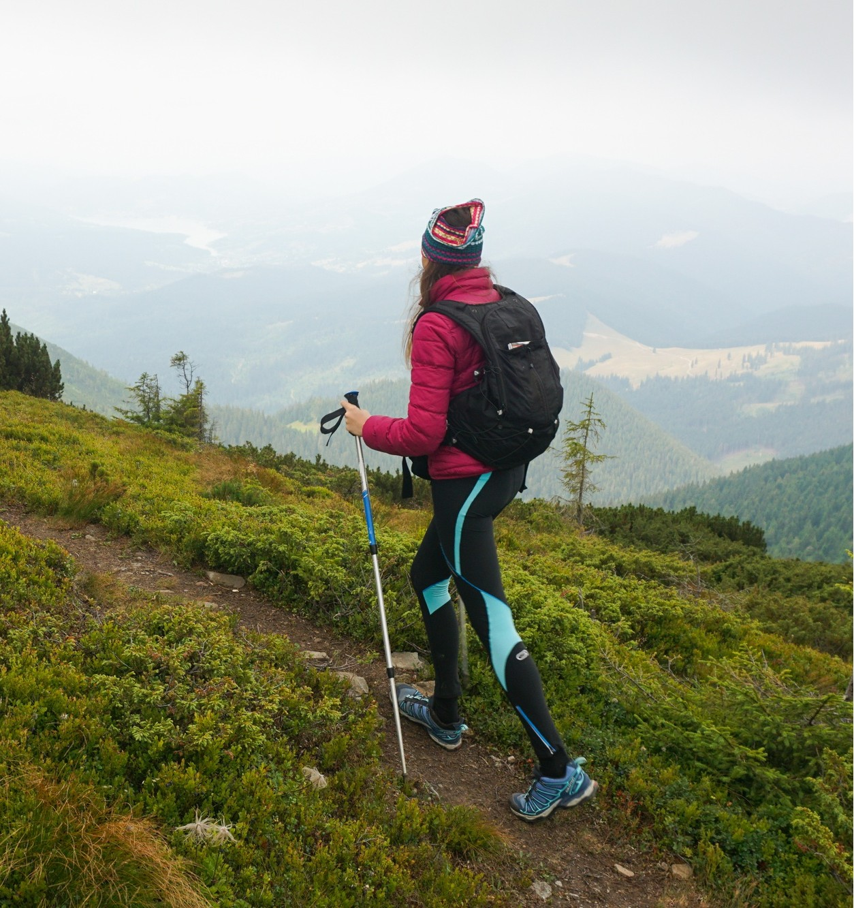

EXPLORE SOELDEN
Sölden is a picturesque town in Tyrol, Austria, renowned as one of the most prestigious ski resorts in the Alps. Situated in the Ötztal valley, it offers visitors breathtaking views of mountain peaks, with several three-thousand-meter glaciers ensuring excellent skiing conditions year-round.
In Sölden, you'll find modern ski areas with over 144 kilometers of slopes, including the famous Giggijoch and Gaislachkogl runs. Thanks to its high altitude and advanced snowmaking technologies, you can almost always expect snow here.
Sölden isn't just about skiing. It also offers a rich cultural program, wellness centers, thermal baths in nearby Längenfeld, and a vibrant nightlife with many restaurants and bars. The natural beauty of the surroundings can be explored on hiking trails that lead through picturesque alpine landscapes.
Sölden is an ideal destination for anyone seeking a combination of sporting activities, relaxation, and alpine charm.
SUMMER IN SOELDEN...
In summer, Sölden becomes a hub for outdoor enthusiasts. Explore breathtaking alpine landscapes on well-marked hiking trails, challenge yourself on thrilling mountain biking routes, or experience the excitement of climbing in the Ötztal Alps. For a more guided experience, join one of the many organized tours and uncover the hidden gems of this stunning region.
Mountain biking in Sölden offers breathtaking views and thrilling descents. With trails for all levels, it's perfect for beginners and experienced riders alike. The Ötztal Alps provide a stunning backdrop for your adventure, making it an unforgettable experience for mountain biking enthusiasts.
Hiking in Sölden offers breathtaking views and serene alpine landscapes. With trails for all levels, it's perfect for a peaceful escape or an adventurous trek. Explore the beauty of the Ötztal Alps and immerse yourself in the tranquility of nature.

Climbing in Sölden offers breathtaking views and thrilling challenges. With routes for all levels, it's perfect for beginners and experienced climbers alike. The stunning rock formations and alpine scenery make it a top destination for climbing enthusiasts.

Guided tours in Sölden offer breathtaking views and unique experiences. With expert guides, it's perfect for exploring hidden gems and learning about the region. Discover the beauty of the Ötztal Alps while gaining insights into the local culture and history.

WINTER IN SOELDEN...
In winter, Sölden transforms into a paradise for snow enthusiasts. Explore perfectly groomed slopes for skiing and snowboarding, enjoy thrilling tobogganing tracks, or experience the excitement of après-ski in vibrant alpine huts. For a more guided experience, join one of the many organized tours and uncover the hidden gems of this stunning winter wonderland.

Skiing in Sölden offers an unparalleled experience with over 144 kilometers of perfectly groomed slopes. Whether you're a beginner or an expert, the variety of runs and excellent snow conditions make it a top destination for skiers worldwide.

Snowboarding in Sölden is a thrilling adventure for riders of all levels. With dedicated snow parks, wide slopes, and off-piste opportunities, snowboarders can enjoy endless excitement in the stunning alpine environment.

Après-ski in Sölden is legendary, offering vibrant bars, cozy mountain huts, and lively nightlife. After a day on the slopes, relax with friends, enjoy local delicacies, and soak in the festive atmosphere.

Tobogganing in Sölden is a fun-filled activity for all ages. Race down well-maintained tracks surrounded by breathtaking winter landscapes, creating unforgettable memories with family and friends.